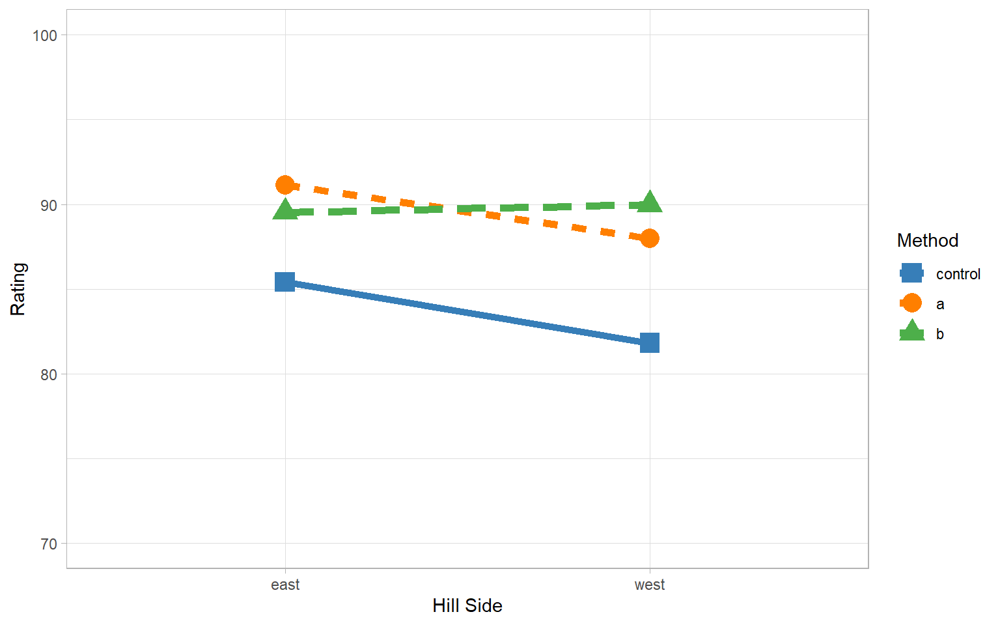
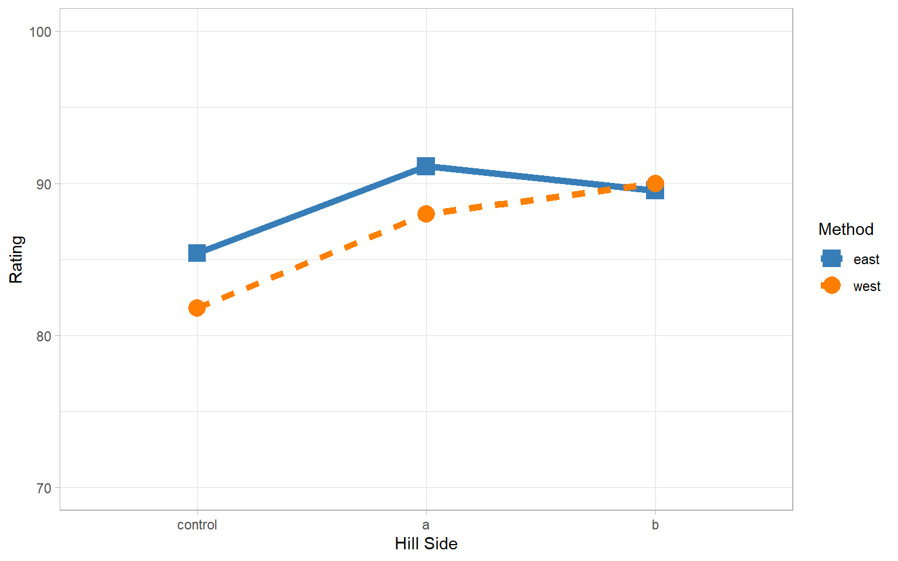
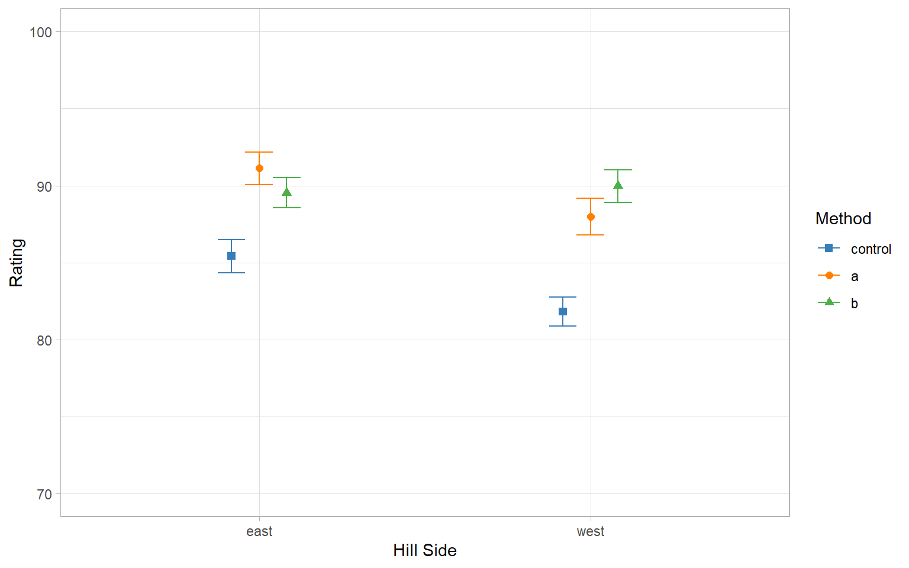
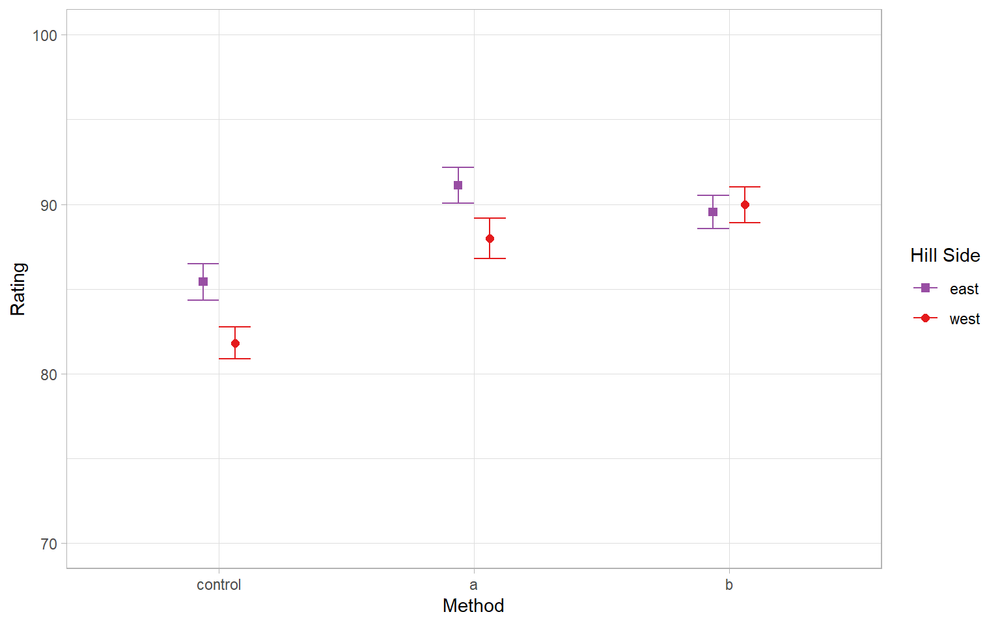

Independent Sample \(t\)-tests compares the means of two different groups
E.g. One control group vs one experimental treatment
One-Way ANOVA compares the means of more than two different groups from a single factor
E.g. One control group vs more than one different experimental treatments
Factorial ANOVA (Two-Way, Three-Way, etc.) compares the means of different groups based on combinations of different factors
E.g. Three different drug types at two different dosage levels.
Preview
In a Two-Way ANOVA, there are two types of effects:
Interaction Effect
The effect of factor \(A\) on the outcome depends on factor \(B\)
The effect of factor \(B\) on the outcome depends on factor \(A\)
Main Effects (also sometimes marginal effects)
The effect of factor \(A\) on the outcome, combining levels of factor \(B\)
The effect of factor \(B\) on the outcome, combining levels of factor \(A\)
Fake Wine Data
This is data I made up!
Suppose I’m a winemaker. My vineyard is located on a hill. I have developed two new grape growing techniques and I want to see how they affect my wine.
Because my vineyard is on a hill, there is another factor I have to consider: whether my grapes get sunlight in the morning or in the evening.
Factor/IV 1: Side of the Hill
East side of hill (gets sunlight in morning)
West side of hill (gets sunlight in evening)
Factor/IV 2: Growing Method
Control (traditional method)
Condition A (one new method I’m trying)
Condition B (another new method I’m trying)
DV: ratings of blind tasted bottles from a wine expert
We call this a \(2\) (hill side) \(\times 3\) (growing method) design
Bodegas Himmelstein
(an actual vineyard I visited in Spain)
Graphical Representation
\(y\)-axis: outcome (DV)
\(x\)-axis: factor #1 (IV1)
Separate lines for separate levels of factor #2 (IV2)
Can use color, linetype, point shape, etc to differentiate
Points represent the mean of the outcome for each combination of the factors
Lines connect points
When interaction effect is present, lines are not (all) parallel
When interaction effect is absent, lines are (all) parallel
Interaction Visual

Interaction Plots
Interaction effect?
Slopes of Method A appears to be different from the other two (B and Control)
Main effect of Hill Side?
Overall, ratings seem better on the East that West side (though maybe not for Method B!)
Main effect of Method?
Overall, both of my new grape growing methods seem to produce better ratings than the control.
Flipping The Factorial
In previous example, we had
\(x\)-axis = hill side
Color = Method
We can also flip them
\(x\)-axis = hill side
Color = method
Depends on interpretation you want to make
Alt Visual

Points with Confidence Intervals/SEs
An alternative to the familiar interaction line plots
Line plots could inadvertently imply an order across factor levels
Leaving them out makes it more difficult to see interaction effects (no diret representation of “slopes”)
Confidence Intervals or standard errors make it easier to see meaningful differences
Like we discussed with bar tip limit error way back at the beginning
Points and SEs Way 1

Points and SEs Way 2

Traditional Structure
For the two-way ANOVA, there are two categorical IVs (factors)
Factor \(A\) has levels \(j = 1, \ldots, J\) and Factor \(B\) has levels \(k = 1, \ldots, K\)
Is the effect of our grape growing method the same, or different for different sides of the hill?
Interaction Testing
We begin by testing the interaction effect because an interaction means the effect of one IV depends on the other IV. Testing the main (overall) effect of that IV may not make sense if that effect varies based on another factor.
\(H_0\): there is no interaction effect in the population
\(H_1\): there is an interaction effect in the population
Test statistic: \(F\)-statistic
\[F_{df_{AB}, df_W} = \frac{MS_{AB}}{MS_W}\]
When \(H_0\) is true, \(F\) follows an \(F\)-distribution with \(df_{AB}\) numerator and \(df_W\) denominator degrees of freedom
If the interaction \(H_0\) is rejected, probe the interaction effect (later)
If the interaction \(H_0\) is not rejected, look at hypothesis tests for main effects
Main \(A\) Testing
Testing Main Effect of Factor \(A\):
\(H_0\): all \(\mu_j\) equal (no main effect of Factor \(A\))
\(H_1\): at least one \(\mu_j\) is different (main effect of Factor \(A\))
\[F(df_A, df_W) = \frac{MS_A}{MS_W}\]
When \(H_0\) is true, \(F\) follows an \(F\)-distribution with \(df_A\) numerator and \(df_W\) denominator degrees of freedom
Main \(B\) Testing
Testing Main Effect of Factor \(B\):
\(H_0\): all \(\mu_k\) equal (no main effect of Factor \(B\))
\(H_1\): at least one \(\mu_k\) is different (main effect of Factor \(B\))
\[F(df_B, df_W) = \frac{MS_B}{MS_W}\]
When \(H_0\) is true, \(F\) follows an \(F\)-distribution with \(df_B\) numerator and \(df_W\) denominator degrees of freedom
Main Interpretations
What does the main effect of factor \(A\) “mean”?
At the average value across all levels of factor \(B\) in our experiment/data/design, there are (or are not) differences in \(y\) for for the levels of factor \(A\)
When might this be weird or not make sense to do?
If all levels of factor \(B\) that we care about are not present in our data!
We can’t necessarily infer what would happen to our growing methods if north/south facing slopes were included. Our main effect estimate of growing method only considers the average of east and west
Two-Way ANOVA in R
Way 1: Using built-in R commands
dat %>% glimpse
Rows: 300Columns: 3$ rating <int> 94, 80, 93, 92, 89, 82, 90, 82, 86, 89, 87,…$ hill <chr>"west", "west", "west", "west", "west", "we…$ method <fct> a, a, a, a, a, a, a, a, a, a, a, a, a, a, a…
We conducted a two-way ANOVA to investigate the effects of hill side and growing method on wine ratings. At \(\alpha = .05\) and using White’s correction, the interaction effect was statistically significant (\(F(2, 294) = 9.17, p < .001\)).
To inspect the interaction effect, we calculated simple main effects…
Effect Sizes
\(r\)-family measures (standardized association):
\(\eta^2\) and partial \(\eta^2\)
\(\omega^2\) and partial \(\omega^2\)
\(f\) (function of partial \(\eta^2\))
\(d\)-family measures:
Cohen’s \(d\) for pairwise comparisons
Appropriate for post-hoc tests of main effects or simple main effects
Partial \(\eta^2\)
Interpretation of partial \(\eta^2\):
Proportion of variation in outcome accounted for by the specified effect, ignoring other effects
Partial \(\eta^2\) for main effect of factor \(A\)
\[\frac{SS_A}{SS_A + SS_W}\]
Partial \(\eta^2\) for main effect of factor \(B\)
\[\frac{SS_B}{SS_B + SS_W}\]
Partial \(\eta^2\) for interaction effect
\[\frac{SS_{AB}}{SS_{AB} + SS_W}\]
\(SS_T = SS_G + SS_W\)
\(SS_T = (SS_A + SS_B + SS_{AB}) + SS_W\)
Note that the denominator of \(\eta^2\) only includes \(SS_W\) and specified effect
“Full” \(\eta^2\)
Interpretation of \(\eta^2\):
Proportion of total variation in the outcome accounted for by the specified effect
\(\eta^2\) for main effect of factor \(A\)
\[\frac{SS_A}{SS_T}\]
\(\eta^2\) for main effect of factor \(B\)
\[\frac{SS_B}{SS_T}\]
\(\eta^2\) for interaction effect
\[\frac{SS_{AB}}{SS_T}\]
Comparisons between partial \(\eta^2\) and \(\eta^2\)
We might prefer \(\eta^2\) because it uses the same denominator for the main effects and interaction. The three \(\eta^2\)s are directly comparable
We might prefer partial \(\eta^2\) because the denominator ignores other effects
\(\eta^2\) always smaller than partial \(\eta^2\)
\(\omega^2\)
Both \(\eta^2\) and partial \(\eta^2\) are positively biased estimates of the population effect size
\(\omega^2\) and partial \(\omega^2\) are less biased:
\(\omega^2\) (Omega-Squared) and Partial \(\omega^2\)
It is possible for partial \(\omega^2\) and \(\omega^2\) to be negative
This occurs when \(MS_{\text{effect}} < MS_W\) (numerator)
This affects interpretation. Suggestions:
Do not report the negative value
Correct the value to \(< .001\)
Like \(p\)-value cannot technically be 0
Effect Size: \(f\)
More traditionally used for power calculations
Function of partial \(\eta^2\) (not \(\eta^2\))
Definition:
\[f = \sqrt{\frac{\eta^2}{1 - \eta^2}}\]
Cohen’s (1988, 1992) suggestions:
0.10: small effect (\(\eta^2 = 0.010\))
0.25: medium effect (\(\eta^2 = 0.059\))
0.40: large effect (\(\eta^2 = 0.138\))
Effect Sizes in R
You can use the effectsize functions we saw last week, or you can also use sjstats to get all of \(\eta^2\), partial \(\eta^2\), \(\omega^2\), partial \(\omega^2\), and \(f\) in one output
As in one-way ANOVA, there closest direct corollary to omnibus tests of interactions and main effects in the Bayesian framework is to use Bayes factors.
Bayes Factors for Model ComparisonModel BF[2] hill * method 5.34* Against Denominator: [1] hill + method* Bayes Factor Type: marginal likelihoods (bridgesampling)
APA Writeup
We conducted a Bayesian two-way ANOVA to investigate the effects of hill side and growing method on wine ratings. Bayes Factors \(BF = 5.34\) in favor of the model that included the interaction between hill type and growing method over one that did not, indicating this model is 5.34 times as likely to be the true model as the non-interactive model.
To inspect the interaction effect, we calculated simple main effects…